Основной ресторан отеля. Каждую субботу 18:00–21:00 буфет Fisherman's BBQ — вариант прощального ужина 31.10 (и 24.10).
Где
в отеле
Что заказать
в буфете: лангуст, гигантские речные креветки на гриле, голубой краб на пару, устрицы, гриль из говядины и свинины, сашими, домашнее мороженое Mövenpick. Вне буфета хвалят зелёное карри и том ям с морепродуктами
С Ниной
ребёнок до 6 лет на буфете бесплатно; есть детский уголок
Цены
буфет: взрослый 1490 бат, 7–12 лет 745, до 6 лет бесплатно; напитки отдельно
Нюансы
мест мало — бронировать заранее через ресепшен; на завтраках бывает очередь
💡 Фишки
Если утром в Twist очередь на завтрак, гости завтракают в стейк-хаусе отеля T55 New York Grill: выбор меньше, зато тихо и хороший сервис (отзыв 2026).
Praneat (ประณีต)
рыбный ресторан · 🚶 ≈ 500 м · ⭐ 4,5 · 250–500 ฿ на чел. · до 22:00?
Тайский рыбный ресторан ≈ 500 м от отеля, через Сукхумвит — с Ниной лучше на машине/такси, дорога оживлённая. Встречают бесплатным ананасовым соком и закуской из листьев бетеля.
Praneat (ประณีต)
Praneat (ประณีต)
рыбный ресторан · 🚶 ≈ 500 м · ⭐ 4,5 · 250–500 ฿ на чел. · до 22:00?
Тайский рыбный ресторан ≈ 500 м от отеля, через Сукхумвит — с Ниной лучше на машине/такси, дорога оживлённая. Встречают бесплатным ананасовым соком и закуской из листьев бетеля.
Где
≈ 500 м, через Сукхумвит
Что заказать
карри с крабом и листьями чаплу с рисовой лапшой, омлет с крабом (кай чжеу пу), жареный сибас с рыбным соусом, жареная лапша по-старинному, том ям, салат из помело с креветками
С Ниной
отмечен как подходящий для детей, есть детское меню; карри делают неострым по просьбе
Цены
250–500 бат на человека
Нюансы
по Google теперь 10:00–22:00 ежедневно (раньше закрывались в 20:00) — перед ужином лучше позвонить; парковка своя
💡 Фишки
Хвалят карри с крабом и салат из помело с креветками, его заворачивают в листья бетеля. Есть сет-меню: в 2025 году сет B стоил 770 бат. Большая крытая парковка.
Glass House Boho
пляжный ресторан · 🚗 5–10 мин · ⭐ 4,2 Google · 250–500 ฿ на чел.
Красивый ресторан прямо на пляже — ради заката и атмосферы. 11:00–24:00.
Glass House Boho
Glass House Boho
пляжный ресторан · 🚗 5–10 мин · ⭐ 4,2 Google · 250–500 ฿ на чел.
Красивый ресторан прямо на пляже — ради заката и атмосферы. 11:00–24:00.
Где
≈ 5–10 мин, на пляже
Что заказать
крабовые клешни на пару, сибас в кисло-сладком соусе, кальмар на гриле, сливочный том ям с крупными креветками; тайское лучше западного
С Ниной
пляжная обстановка, есть где побегать
Цены
250–500 бат на человека, некоторые считают дороговатым
Нюансы
еда средняя, сервис медленный; в выходные бронировать; взять репеллент от комаров; таксисту говорить «The Glass House»
💡 Фишки
Есть зал с кондиционером и зона прямо на пляже, вечером у моря красиво. В отзывах 2026 года хвалят закат и обстановку, еду называют неплохой, но не лучшей.
Pupen Seafood
рыбный ресторан · 🚗 10–15 мин · ⭐ 4,3 · ฿฿ средне
Огромный и популярный рыбный ресторан у моря. 10:00–22:00.
Огромный и популярный рыбный ресторан у моря. 10:00–22:00.
Где
≈ 10–15 мин, конец пляжа Джомтьен
Что заказать
голубой краб в жёлтом карри (пу пад понг карри), жареный рис с крабом, рис в ананасе, крабовые ноги, том ям, рыба на гриле
С Ниной
некоторые блюда очень острые — просить «май пхет»; бывает живая музыка
Цены
разумно; морепродукты на вес
Нюансы
в выходные людно — приходить к закату, столики на улице бронировать; качество бывает неровным
💡 Фишки
Главное блюдо в отзывах — голубой краб в жёлтом карри. Подают быстро, часто за 15 минут. Вечером на сцене играют музыканты, лучшие столики у пляжа на закате.
Lung Sawai (ลุงไสว)
рыбный ресторан · 🚗 10–15 мин · ⭐ 3,9 · ฿฿฿ выше среднего
Старейший рыбный ресторан Джомтьена на деревянном пирсе над водой. 10:00–22:00.
Lung Sawai (ลุงไสว)
Lung Sawai (ลุงไสว)
рыбный ресторан · 🚗 10–15 мин · ⭐ 3,9 · ฿฿฿ выше среднего
Старейший рыбный ресторан Джомтьена на деревянном пирсе над водой. 10:00–22:00.
Где
≈ 10–15 мин, Jomtien Beach Rd
Что заказать
фаршированные панцири краба на пару, краб в карри, кисло-острое карри с рыбьей икрой, салат из крылатой фасоли
С Ниной
на пирсе следить за ребёнком у края
Цены
выше среднего; морепродукты на вес
Нюансы
в пик долго ждать; качество неровное; днём приятнее из-за бриза
💡 Фишки
Хвалят кальмара с солёным яйцом и салат из папайи. Едят в основном тайцы. Днём у моря ветер, поэтому еда быстро остывает.
✨ Ещё рядом — по свежим отзывам
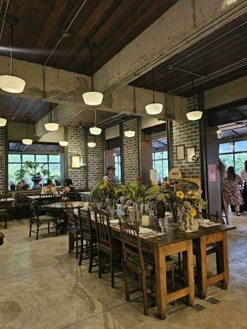
А-ля Кампань (À La Campagne)
кафе-парк с фермой · 🚗 ≈ 5–7 мин · ⭐ 4,5 Google · 101–250 ฿ · отлично с Ниной
Большой парк-комплекс у Сукхумвита в стиле европейской деревни (≈ 45 рай). Внутри чайная Tea Factory, пекарня, кафе с тайской и итальянской едой, сад и ферма.
А-ля Кампань (À La Campagne)
А-ля Кампань (À La Campagne)
кафе-парк с фермой · 🚗 ≈ 5–7 мин · ⭐ 4,5 Google · 101–250 ฿ · отлично с Ниной
Большой парк-комплекс у Сукхумвита в стиле европейской деревни (≈ 45 рай). Внутри чайная Tea Factory, пекарня, кафе с тайской и итальянской едой, сад и ферма.
💡 Фишки
В Tea Factory — сконы, розовый чай, кокосовый и апельсиновый торт с маком, тирамису. Из пекарни — круассаны. В саду поющий фонтан, а в глубине лошади. На ферме кормят животных и собирают яйца в курятнике (ферма ≈ 10:00–17:00). Есть игровая площадка и «скай-парк» для детей.
С Ниной
С Ниной отлично: тенистый сад, площадка, животные, много места побегать. Почти половина отзывов на Wongnai — от семей с детьми.
Часы
по Google ежедневно 10:00–20:00; у Tea Factory на Wongnai 10:00–17:30; ферма ≈ 10:00–17:00
Цены
101–250 бат на человека, обед бывает 251–500 (Wongnai)
Оценка
отлично — лучшее место поблизости, чтобы и поесть, и погулять с Ниной
Нюансы
Часы в разных источниках не совпадают, лучше приезжать до 17:00, пока работает ферма. Отдел сом тама в отзывах хвалят меньше всего. В выходные людно.
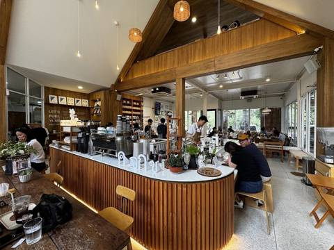
Back to School Cafe & Roastery
кофейня с детской зоной · 🚗 ≈ 5–7 мин · ⭐ 4,8 Google · 101–250 ฿ · отлично с Ниной
Кофейня, где сами обжаривают зерно. Деревянный дом в «школьном» стиле. Три зоны: зал с кондиционером, второй этаж с игрушками для детей и сад с детской площадкой.
Back to School Cafe & Roastery
Back to School Cafe & Roastery
кофейня с детской зоной · 🚗 ≈ 5–7 мин · ⭐ 4,8 Google · 101–250 ฿ · отлично с Ниной
Кофейня, где сами обжаривают зерно. Деревянный дом в «школьном» стиле. Три зоны: зал с кондиционером, второй этаж с игрушками для детей и сад с детской площадкой.
💡 Фишки
Кофейщики приезжают сюда за редкими сортами вроде Panama Geisha. Из еды хвалят баноффи, чизкейк и тонкацу с соусом пананг. Нине подойдут шоколадный или банановый смузи.
С Ниной
С Ниной отлично: игровая на втором этаже и площадка в саду. Отзыв 2026 года: «если у вас малыш, это место для вас». Чисто и просторно, есть парковка.
Часы
ежедневно ≈ 8:00–18:00 (в Google есть и вариант до 17:30)
Цены
101–250 бат на человека (Wongnai)
Оценка
отлично — утренний кофе для взрослых и площадка для Нины в 5 минутах от отеля
Нюансы
Закрывается рано, на вечер не подходит. Стоит в переулке напротив колледжа, по навигатору найти легко.
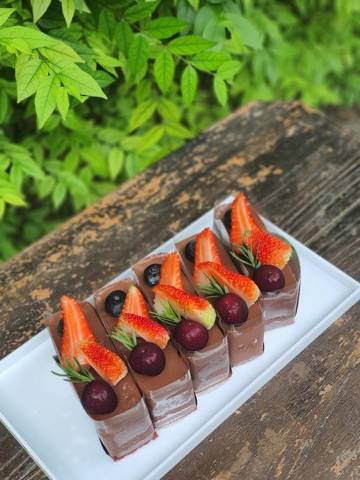
Ферма Кун Ин (Kun Ying Hydroponic Farm)
кафе на ферме · 🚗 ≈ 15 мин · ⭐ 4,6 Google · отлично с Ниной
Кафе для завтрака и обеда при гидропонной ферме, в тени больших деревьев у озера. Сидеть можно в зале с кондиционером или на улице у воды.
Ферма Кун Ин (Kun Ying Hydroponic Farm)
Ферма Кун Ин (Kun Ying Hydroponic Farm)
кафе на ферме · 🚗 ≈ 15 мин · ⭐ 4,6 Google · отлично с Ниной
Кафе для завтрака и обеда при гидропонной ферме, в тени больших деревьев у озера. Сидеть можно в зале с кондиционером или на улице у воды.
💡 Фишки
Для гостей есть корм, чтобы покормить рыбу (до 60 см), уток и гусей, оставляют небольшое пожертвование. На ферме можно самим собрать салат. Курицы живут тут же, поэтому хвалят омлеты. Ещё советуют скрэмбл с копчёной уткой, домашние мини-пирожные и зелёный овощной смузи.
С Ниной
С Ниной отлично: кормить уток и рыб, смотреть на кур. Зал с кондиционером и чистые туалеты. У воды держать Нину за руку.
Часы
вт–вс 8:00–17:00, понедельник выходной
Цены
в отзывах называют недорогим
Оценка
отлично — завтрак с кормлением животных; удобно совместить с Ват Яном или Чи Чаном
Нюансы
Закрыто в понедельник и после 17:00. Дорога ведёт вглубь от моря.
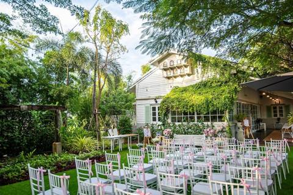
Treehouse Garden Cafe
кафе-ресторан в саду · 🚗 ≈ 12–15 мин · ⭐ 4,5 Google · отлично с Ниной
Большой ухоженный сад и дом в колониальном стиле. Можно сесть в зал с кондиционером или на веранду с вентиляторами. В меню тайская и западная еда, кофе и торты.
Treehouse Garden Cafe
Treehouse Garden Cafe
кафе-ресторан в саду · 🚗 ≈ 12–15 мин · ⭐ 4,5 Google · отлично с Ниной
Большой ухоженный сад и дом в колониальном стиле. Можно сесть в зал с кондиционером или на веранду с вентиляторами. В меню тайская и западная еда, кофе и торты.
💡 Фишки
Под деревьями огромная тенистая парковка, машина не нагревается. Тайскую еду готовят мягче обычного, на вкус европейцев. В отзывах хвалят кофе и торты.
С Ниной
С Ниной хорошо: современная детская площадка и много места в саду. Мягкие по остроте блюда.
Часы
ежедневно 11:00–20:00
Цены
в отзывах называют честными
Оценка
отлично — обед или ранний ужин на природе с площадкой
Нюансы
Стоит в глуши, нужна машина. На саду бывают свадьбы, тогда часть территории закрыта.
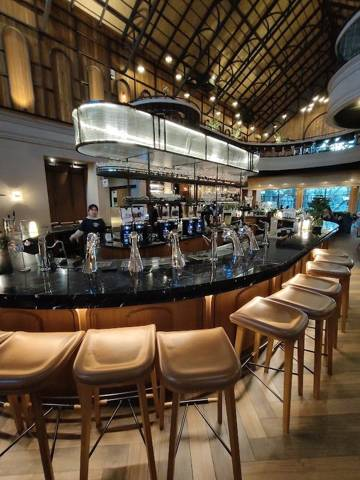
Нитан (Nitan Coffee's Tale)
кофейня-ресторан · 🚗 ≈ 5 мин · ⭐ 4,7 Google · отлично с Ниной
Огромное здание в стиле готического собора, внутри своя обжарка кофе и большая кофейная стойка. Снаружи сад с прудом, ручьями и водопадами. Подают десерты и полноценную еду.
Нитан (Nitan Coffee's Tale)
Нитан (Nitan Coffee's Tale)
кофейня-ресторан · 🚗 ≈ 5 мин · ⭐ 4,7 Google · отлично с Ниной
Огромное здание в стиле готического собора, внутри своя обжарка кофе и большая кофейная стойка. Снаружи сад с прудом, ручьями и водопадами. Подают десерты и полноценную еду.
💡 Фишки
Хвалят чёрную лапшу с чернилами каракатицы, рис с крабом, жареный рис с зелёным карри и говядиной, «грязную» матчу. Работает до 22:00, поэтому подходит для десерта после рабочего дня. У Нитана есть второе кафе на Пратамнаке, в пиратском стиле.
С Ниной
С Ниной хорошо: золотые рыбки в пруду, есть где погулять, много парковки. Внутри с кондиционером.
Часы
ежедневно 8:30–22:00
Цены
дороговато (по отзывам)
Оценка
отлично — ближайшее красивое место на вечер после 19:00
Нюансы
Десерты очень сладкие, манго с липким рисом хвалят меньше всего. Сервис иногда путается. Утром может не быть части напитков.
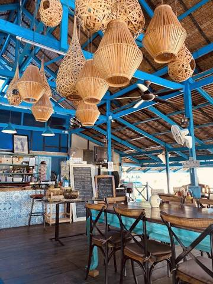
Lake House (by My Thai)
тайское кафе у озера · 🚗 ≈ 3–5 мин · ⭐ 4,5 Google · можно с Ниной
Небольшое тайское кафе на берегу озера в яхт-клубе Ocean Marina. Вокруг деревья и газоны, с моря дует ветерок. Открыто с утра, подают и завтраки.
Lake House (by My Thai)
Lake House (by My Thai)
тайское кафе у озера · 🚗 ≈ 3–5 мин · ⭐ 4,5 Google · можно с Ниной
Огромный и очень популярный у тайцев рыбный ресторан на площадке над морем. Морепродукты выбирают живыми из аквариумов.
💡 Фишки
Лучшие блюда на Wongnai: кальмар с солёным яйцом, рачки-богомолы в чесноке, жареный сибас с рыбным соусом, хо мок и краб на пару. Лайфхак: с 17:00 до 19:00 трудно припарковаться, после 19:30 свободнее. Это удобно для ужина после работы Дениса.
С Ниной
С Ниной хорошо: аквариумы с крабами и рыбой ей понравятся. На Wongnai стоит отметка «подходит детям», 59% отзывов от семей. Просить «май пхет».
Часы
ежедневно 10:00–21:00 (по Google; Wongnai пишет до 22:00)
Цены
251–500 бат на человека (Wongnai); живые морепродукты на вес
Оценка
можно — живой «тайский» ужин рядом с отелем, но оценки средние
Нюансы
Вечером на открытом настиле ветер и еда быстро остывает. Столики у самого пляжа тёмные, лучше брать на суше. Меню почти без английского, но с фото. Цены выше среднего.
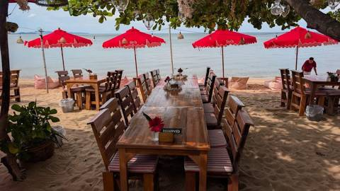
Siri's Beach Café
пляжное кафе · 🚗 ≈ 7–10 мин · ⭐ 4,8 Google · отлично с Ниной
Маленькое кафе в тихом конце сой 8. Столики стоят на песке у самой воды, есть кресла-мешки. Еда тайская и западная, порции большие.
Siri's Beach Café
Siri's Beach Café
пляжное кафе · 🚗 ≈ 7–10 мин · ⭐ 4,8 Google · отлично с Ниной
Маленькое кафе в тихом конце сой 8. Столики стоят на песке у самой воды, есть кресла-мешки. Еда тайская и западная, порции большие.
💡 Фишки
Приезжать к закату: в конце октября солнце садится около 18:00. Хвалят бургер из вагю и подачу блюд. Тихо, людей мало.
С Ниной
С Ниной хорошо: песок под ногами и море рядом. В отзывах пишут, что подходит для любого возраста. Коляска по песку едет плохо.
Часы
9:30–20:00, вторник выходной
Цены
в отзывах называют умеренными
Оценка
отлично — закат с ногами в песке в 10 минутах от отеля
Нюансы
Закрывается в 20:00, поэтому после работы Дениса успеть трудно. Укрыться от дождя почти негде. Взять репеллент.
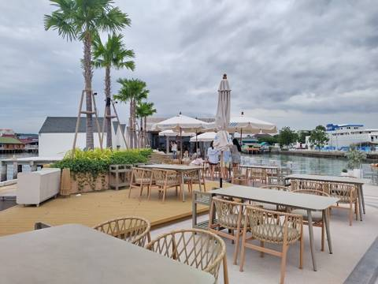
Maris Cafe (Бангсарай)
кафе с видом на закат · 🚗 ≈ 12–15 мин · ⭐ 4,6 Google · отлично с Ниной
Стильное кафе-ресторан на берегу Бангсарая, работает вместе с отелем. Столики вдоль пальм и на пирсе, вид на море и острова. Подают тайскую и западную еду и торты.
Maris Cafe (Бангсарай)
Maris Cafe (Бангсарай)
кафе с видом на закат · 🚗 ≈ 12–15 мин · ⭐ 4,6 Google · отлично с Ниной
Стильное кафе-ресторан на берегу Бангсарая, работает вместе с отелем. Столики вдоль пальм и на пирсе, вид на море и острова. Подают тайскую и западную еду и торты.
💡 Фишки
Приезжать за 30–40 минут до заката. От дальней парковки до кафе возят на гольф-каре или сонгтэо. Торты здесь хвалят особо. По вечерам поёт живой исполнитель. Посетители в основном тайцы.
С Ниной
С Ниной хорошо: просторно, в отзыве советуют для семей. На пирсе следить за краем.
Часы
ежедневно 10:00–21:00
Цены
примерно в 1,5 раза дороже местных кафе (по отзывам)
Оценка
отлично — закат в выходной или ужин до 21:00
Нюансы
В выходные людно, лучше бронировать. Блюда иногда ждут долго, сервис неровный. Укрытия от дождя мало.
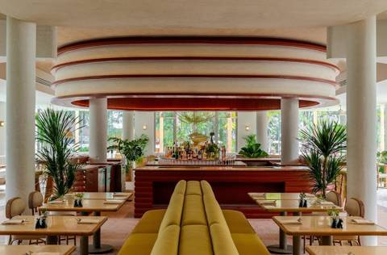
Sereia Thai Coastal Grill (The Standard)
ресторан морепродуктов в отеле · 🚗 ≈ 5–7 мин · ⭐ 4,8 Google · можно с Ниной
Ресторан нового отеля The Standard Pattaya Na Jomtien. Готовят морепродукты по рецептам провинции Чонбури. Можно сесть у бассейна или в стильном зале.
Sereia Thai Coastal Grill (The Standard)
Sereia Thai Coastal Grill (The Standard)
ресторан морепродуктов в отеле · 🚗 ≈ 5–7 мин · ⭐ 4,8 Google · можно с Ниной
Ресторан нового отеля The Standard Pattaya Na Jomtien. Готовят морепродукты по рецептам провинции Чонбури. Можно сесть у бассейна или в стильном зале.
💡 Фишки
На открытии хвалили рыбные котлеты на гриле и красное карри с крабом. Свежие кокосы и соки. В отзывах пишут, что для отеля такого уровня цены за ужин разумные.
С Ниной
С Ниной можно: просторный зал, отель, удобные туалеты. Детское меню нигде не упоминается.
Часы
ежедневно 6:30–22:30 (утром — завтраки отеля)
Оценка
можно — удобный ужин рядом с отелем после 19:00
Нюансы
Ресторан новый, отзывов пока мало. У бассейна бывают мухи. На праздники цены сильно выше обычных.
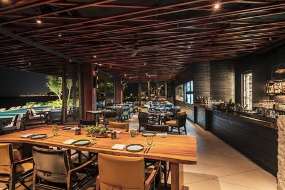
Fish Club (Andaz Pattaya)
ресторан морепродуктов на пляже · 🚗 ≈ 10 мин · ⭐ 4,7 Google · 800 ฿ · можно с Ниной
Ресторан отеля Andaz прямо на пляже, рядом с бассейном. Есть зал и терраса с видом на море. Попал в гид Michelin.
Fish Club (Andaz Pattaya)
Fish Club (Andaz Pattaya)
ресторан морепродуктов на пляже · 🚗 ≈ 10 мин · ⭐ 4,7 Google · 800 ฿ · можно с Ниной
Ресторан отеля Andaz прямо на пляже, рядом с бассейном. Есть зал и терраса с видом на море. Попал в гид Michelin.
💡 Фишки
Фишка — морепродукты на гриле, где вместо углей кокосовая скорлупа. Хвалят салат с аляскинским крабом и авокадо, рыбный бургер с котлетой из креветок, кокосовый колд-брю. В том же отеле есть тайский Wok Wok (4,8 Google).
С Ниной
С Ниной можно: зал с кондиционером, терраса у пляжа.
Часы
вс–чт 11:00–22:00, пт–сб 11:00–24:00
Цены
уровень отеля: поке с тунцом ≈ 800 бат
Оценка
можно — красивый ужин у моря, но дорого
Нюансы
Дорого, порции небольшие. В выходные вечером бронировать.
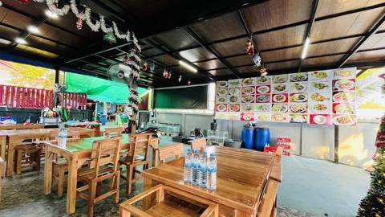
Круа Джэм Пупен (ครัวแจ่มปูเป็น)
местный рыбный ресторан · 🚗 ≈ 8–10 мин · ⭐ 4,8 Google · можно с Ниной
Небольшой новый ресторан морепродуктов «для своих». Зал и места на улице, свежие морепродукты по разумным ценам.
Круа Джэм Пупен (ครัวแจ่มปูเป็น)
Круа Джэм Пупен (ครัวแจ่มปูเป็น)
местный рыбный ресторан · 🚗 ≈ 8–10 мин · ⭐ 4,8 Google · можно с Ниной
омлет с устрицами, гребешки в масле, карри с крабом, том ям кунг, сибас целиком во фритюре, кальмар в соусе из солёного желтка
С Ниной
шумно, с 20:00 живая музыка — лучше обед или ранний ужин
Цены
$$$ — «дороговато», порции небольшие
Нюансы
пик 19–21: бронь или приходить до 19:00; ряд у воды разбирают первым; лучшее время — закат
💡 Фишки
Чаще всего в отзывах хвалят блюда в солёном желтке и жареный рис с крабом. Самые красивые места — у воды на закате; в темноте моря уже не видно, поэтому приезжать до 18:00.
Рыбный рынок Лан Пхо (Наклуа)
рыбный рынок · 🚗 35–40 мин · ⭐ 4,4 Google · готовка 30–80 ฿ · лучше до 9:00
Главный рыбный рынок Паттайи, где покупают местные. Выбираете живую или свежую рыбу, креветок, крабов — и тут же отдаёте приготовить. Ежедневно ≈ 5:00–18:00.
Рыбный рынок Лан Пхо (Наклуа)
Рыбный рынок Лан Пхо (Наклуа)
рыбный рынок · 🚗 35–40 мин · ⭐ 4,4 Google · готовка 30–80 ฿ · лучше до 9:00
Главный рыбный рынок Паттайи, где покупают местные. Выбираете живую или свежую рыбу, креветок, крабов — и тут же отдаёте приготовить. Ежедневно ≈ 5:00–18:00.
сибас, креветки, кальмары, голубой краб; приготовить на гриле, на пару с лаймом или в карри; сушёные кальмары и рыба — домой
С Ниной
Нине — рыбу на пару или на гриле, без соуса; на полу мокро и скользко — держать за руку или в переноске
Цены
на 30–50% дешевле ресторанов; готовка 30–80 бат за блюдо
Нюансы
приходить утром, лучше до 9:00 — свежее и не жарко; обувь — шлёпанцы; уточняйте цену за кг и смотрите на весы; мечехвоста не брать
💡 Фишки
Через дорогу от рядов работает отдельная зона готовки (Lan Pho Seafood Cooking Service, до 19:00): покупаете на рынке и несёте туда. У большинства лотков цены похожи, живые морепродукты заметно дороже.
Bali Hai By The Sea
ресторан-буфет · 🚗 ≈ 30 мин · ⭐ 4,1 · ≈ 880 ฿
Ресторан у пирса Бали Хай (отель Siam Bayshore) — удобно поужинать после острова.
в выходные людно; перед рестораном ремонт дороги — гостей подвозят на гольф-каре
💡 Фишки
Меню с фотографиями на английском, блюда ≈ 250–300 бат. Можно сесть в закрытом зале.
Фуд-корт Pier 21 (Terminal 21)
фуд-корт · 🚗 40–50 мин · ⭐ 4,6 · блюда 40–100 ฿
Фуд-корт на 3 этаже ТЦ Terminal 21 (North Pattaya, не у океанариума). Лучший способ попробовать много тайских блюд дёшево: десятки стоек, «потратить 200 бат трудно». 11:00–22:00.
Фуд-корт на 3 этаже ТЦ Terminal 21 (North Pattaya, не у океанариума). Лучший способ попробовать много тайских блюд дёшево: десятки стоек, «потратить 200 бат трудно». 11:00–22:00.
Где
в ТЦ Terminal 21, North Pattaya (≈ 40–50 мин от отеля)
Что заказать
Cha Tra Mue — тайский чай; стойка с том ямом и хрустящим омлетом; сом там (40), суп со свининой (55), манго с клейким рисом, кокосовое мороженое
С Ниной
шумно и людно, зато есть детские стульчики
Цены
блюда 40–100 бат
Нюансы
платите картой: пополняете на стойке у входа, остаток возвращают там же
💡 Фишки
Креветки — 3 шт. за 50 бат, зелёное карри с говядиной — 70 бат. В обед длинные очереди, лучше прийти до 12:00 или после 14:00. В Terminal 21 туалеты на каждом этаже оформлены по-своему — Нине будет интересно.
Ночной рынок Тепразит
ночной рынок · 🚗 15–20 мин · ⭐ 4,5 Google · 150–300 ฿ на чел. · пт–вс
Большой ночной рынок, полностью работает пт–вс ≈ 17:00–23:00.
Ночной рынок Тепразит
Ночной рынок Тепразит
ночной рынок · 🚗 15–20 мин · ⭐ 4,5 Google · 150–300 ฿ на чел. · пт–вс
Кафе с кроликами и игровыми, виды на закат, лапша из гида Michelin — по свежим отзывам.
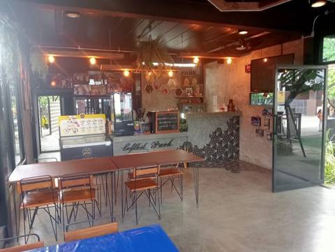
Кафе-парк с кроликами Loftbit Park (Наклуа, восток)
семейное кафе с животными и площадкой · 🚗 ≈ 35–40 мин · ⭐ 4,7 Google · 200–400 ฿ · отлично с Ниной
Семейный ресторан за Наклуа, в стороне от центра: тайская и европейская кухня, зал внутри и столики в саду. В саду живут кролики, есть батут, горка, пруд с рыбами и детское меню.
Кафе-парк с кроликами Loftbit Park (Наклуа, восток)
Кафе-парк с кроликами Loftbit Park (Наклуа, восток)
семейное кафе с животными и площадкой · 🚗 ≈ 35–40 мин · ⭐ 4,7 Google · 200–400 ฿ · отлично с Ниной
Семейный ресторан за Наклуа, в стороне от центра: тайская и европейская кухня, зал внутри и столики в саду. В саду живут кролики, есть батут, горка, пруд с рыбами и детское меню.
💡 Фишки
Главная фишка — больше десятка кроликов в саду: детям дают с ними пообщаться. Пруд с рыбками и батут — можно провести пару часов. Вечером бывает живая музыка. По-тайски место подписано «คาเฟ่กระต่ายพัทยา» (кроличье кафе Паттайи).
С Ниной
Идеально для Нины: кролики, горка, батут, детское меню, есть где побегать. Для коляски — сад и дорожки, есть закрытый зал.
Часы
ежедневно 11:00–22:00
Цены
≈ 200–400 бат на человека
Оценка
отлично — лучший «кроличий» обед с ребёнком; далеко, поэтому лучше совместить с Наклуа или Храмом Истины
Нюансы
далеко от отеля (≈ 40 мин); кухня простая, без изысков; днём жарко в саду — лучше до 12 или после 16
детское кафе / крытая игровая · 🚗 ≈ 35–45 мин · ⭐ 4,8 Google · отлично с Ниной
Новая крытая игровая напротив ТЦ Terminal 21: горки, сухой бассейн, лазалки на двух этажах, а рядом кафе с кофе, соками, едой и десертами. Рассчитана на детей от 1 до 7 лет.
Новая крытая игровая напротив ТЦ Terminal 21: горки, сухой бассейн, лазалки на двух этажах, а рядом кафе с кофе, соками, едой и десертами. Рассчитана на детей от 1 до 7 лет.
💡 Фишки
Есть услуга няни: можно оставить ребёнка под присмотром и спокойно поесть или сходить в Terminal 21 через дорогу. Обязательно взять носки — без них не пускают. Удобно совместить с фуд-кортом Pier 21 и океанариумом.
С Ниной
Сделано ровно под возраст Нины: мягкие горки, шарики, чисто, персонал говорит по-английски. Внутри кондиционер.
Часы
ежедневно 11:00–20:00 (в дни частных праздников могут менять)
Цены
вход в игровую платный (почасовой), цену уточнить по телефону +66 81 110 1713; еда отдельно
Оценка
отлично — лучший вариант на дождливый день в Северной Паттайе
Нюансы
носки обязательны; в выходные больше детей; далеко от отеля
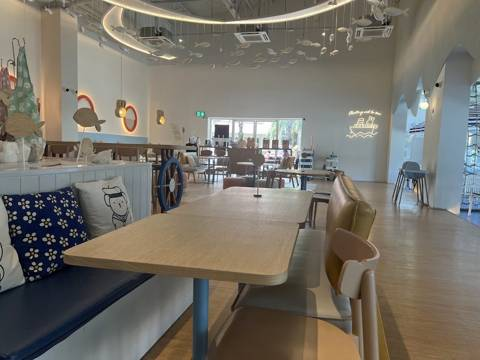
Кафе Миффи (Miffy's Voyage Café Pattaya)
тематическое кафе · 🚗 ≈ 15–20 мин · ⭐ 4,6 Google · 200–400 ฿ · отлично с Ниной
Большое светлое кафе в морском стиле с зайкой Миффи повсюду: фигуры в полный рост, посуда, подушки. Кормят неожиданно хорошо, есть уголок с сухим бассейном.
Кафе Миффи (Miffy's Voyage Café Pattaya)
Кафе Миффи (Miffy's Voyage Café Pattaya)
тематическое кафе · 🚗 ≈ 15–20 мин · ⭐ 4,6 Google · 200–400 ฿ · отлично с Ниной
Большое светлое кафе в морском стиле с зайкой Миффи повсюду: фигуры в полный рост, посуда, подушки. Кормят неожиданно хорошо, есть уголок с сухим бассейном.
💡 Фишки
Латте с мордочкой Миффи, пышные панкейки, курица с вафлями. Стоит рядом с ночным рынком Тепразит: в пятницу–воскресенье можно сначала зайти в кафе, а после 17:00 перейти на рынок. Своя бесплатная парковка.
С Ниной
Нине понравится: Миффи в полный рост, сухой бассейн. Но игровой уголок маленький, туда помещаются 2–3 малыша. Внутри кондиционер, проходы широкие.
Часы
пн–сб 11:00–20:00, вс 10:00–20:00
Цены
≈ 200–400 бат на человека
Оценка
отлично — близко к отелю, крыто, мило; хороший вариант на вечер буднего дня до 20:00
Нюансы
закрывается в 20:00; напитки дороговаты; в выходные и праздники бывают очереди
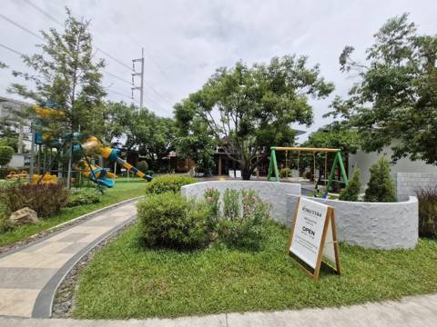
Кафе в саду Bunny Shake (Suan Banchong)
кафе в саду с детской площадкой · 🚗 ≈ 30–35 мин · ⭐ 4,8 Google · 200–400 ฿ · отлично с Ниной
Уютное кафе в большом саду к востоку от Сукхумвит: светлый зал с диванами, детская игровая внутри и большая площадка снаружи. Лёгкие обеды и десерты.
Кафе в саду Bunny Shake (Suan Banchong)
Кафе в саду Bunny Shake (Suan Banchong)
кафе в саду с детской площадкой · 🚗 ≈ 30–35 мин · ⭐ 4,8 Google · 200–400 ฿ · отлично с Ниной
Уютное кафе в большом саду к востоку от Сукхумвит: светлый зал с диванами, детская игровая внутри и большая площадка снаружи. Лёгкие обеды и десерты.
💡 Фишки
Фирменное — суфле (берут «трио суфле») и банановые французские тосты, бабл-ти. В пруду можно покормить рыб. Своя большая парковка.
С Ниной
Отлично для Нины: игровая комната внутри, площадка на улице, пруд с рыбками; есть тайская еда без остроты (пад крапао можно попросить не острым).
Часы
ежедневно 9:00–18:00
Цены
≈ 200–400 бат на человека
Оценка
отлично — спокойное «детское» кафе с хорошими десертами
Нюансы
закрывается в 18:00; порции небольшие для своей цены; далеко от центра, без машины неудобно
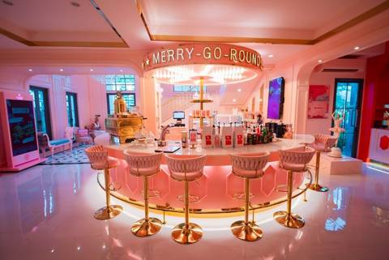
Кафе-карусель Merry Go Round (Бангсарай)
тематическое кафе · 🚗 ≈ 10–15 мин · ⭐ 4,9 Google · 400–600 ฿ · можно с Ниной
Кафе-ресторан в отеле Once Upon a Hotel, оформленном в стиле фильмов Уэса Андерсона: розовый зал с барной стойкой-каруселью и единорогами. Меню от тайской еды до пиццы.
Кафе-карусель Merry Go Round (Бангсарай)
Кафе-карусель Merry Go Round (Бангсарай)
тематическое кафе · 🚗 ≈ 10–15 мин · ⭐ 4,9 Google · 400–600 ฿ · можно с Ниной
Кафе-ресторан в отеле Once Upon a Hotel, оформленном в стиле фильмов Уэса Андерсона: розовый зал с барной стойкой-каруселью и единорогами. Меню от тайской еды до пиццы.
💡 Фишки
Очень фотогенично, десятки фотозон. Хвалят пиццу и йогурт из греческого йогурта с топпингами; мороженое подают в виде розовых фигурок. Удобная остановка по дороге в Нонг Нуч или на пляжи Саттахипа.
С Ниной
Нине интересно смотреть: розовые единороги и карусель. Детской площадки в отзывах нет. Внутри кондиционер.
Часы
ежедневно 9:00–19:00
Цены
≈ 400–600 бат на человека
Оценка
можно — красивое место для завтрака или десерта по пути на юг
Нюансы
часть блюд готовят 40+ минут — спрашивать при заказе; за отзыв дарят угощение, поэтому рейтинг может быть немного завышен
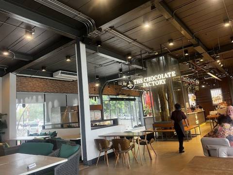
The Chocolate Factory (Пратамнак)
кафе-кондитерская с видом · 🚗 ≈ 25–30 мин · ⭐ 4,4 Google · 800–1000 ฿ · отлично с Ниной
Ресторан и шоколадная лавка на склоне Пратамнака, столики на террасе под деревьями с видом на море. Готовят тайскую и европейскую еду, но главное здесь — шоколад и десерты.
The Chocolate Factory (Пратамнак)
The Chocolate Factory (Пратамнак)
кафе-кондитерская с видом · 🚗 ≈ 25–30 мин · ⭐ 4,4 Google · 800–1000 ฿ · отлично с Ниной
Ресторан и шоколадная лавка на склоне Пратамнака, столики на террасе под деревьями с видом на море. Готовят тайскую и европейскую еду, но главное здесь — шоколад и десерты.
💡 Фишки
Брать шоколадный купол (dome) и конфеты ручной работы с витрины, например банофи. Лучшее время — за час до заката. Стоит в одном комплексе с The Sky Gallery: можно взять десерт здесь после ужина там.
С Ниной
Нине — шоколадный напиток или мороженое. Терраса без высокого обрыва, есть закрытый зал с кондиционером.
Часы
ежедневно 11:00–22:00
Цены
≈ 800–1000 бат на человека с основным блюдом; к счёту +10% сервис и 7% налог
Оценка
отлично для заката с десертом
Нюансы
сервис бывает невнимательным; в некоторых блюдах с креветками бывает очень остро — предупреждать «май пхет»
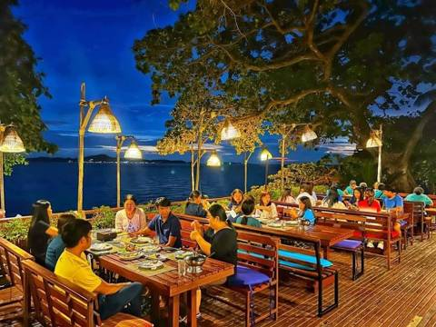
Cabbages & Condoms (сад на берегу, Пратамнак)
ресторан в саду у моря · 🚗 ≈ 25–30 мин · ⭐ 4,4 Google · 400–600 ฿ · отлично с Ниной
Ресторан в тропическом саду курорта Birds & Bees: террасы спускаются к воде, шум моря слышен почти с каждого стола. Ресторан принадлежит благотворительному фонду, доход идёт на его социальные программы.
Cabbages & Condoms (сад на берегу, Пратамнак)
Cabbages & Condoms (сад на берегу, Пратамнак)
ресторан в саду у моря · 🚗 ≈ 25–30 мин · ⭐ 4,4 Google · 400–600 ฿ · отлично с Ниной
Ресторан в тропическом саду курорта Birds & Bees: террасы спускаются к воде, шум моря слышен почти с каждого стола. Ресторан принадлежит благотворительному фонду, доход идёт на его социальные программы.
💡 Фишки
Одно из лучших мест на закат в Паттайе. Хвалят том ям кунг, крапао, рис в ананасе и жареный рис с кокосом. Внизу маленький пляж, туда можно спуститься. Открыто с 7:00, можно приехать на завтрак.
С Ниной
Нине — рис в ананасе, жареный рис; можно погулять по саду и спуститься к пляжу. Ступеньки на террасах, коляску местами придётся нести.
Часы
ежедневно 7:00–23:00
Цены
≈ 400–600 бат на человека
Оценка
отлично — самый «закатный» ужин на Пратамнаке, и еду по отзывам хвалят больше, чем в Sky Gallery
Нюансы
в ветреный день со стола сдувает салфетки и даже еду; в полном зале обслуживают медленно; столики у воды лучше бронировать
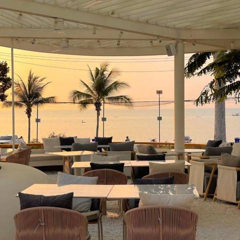
Tide Bangsaray (у моря в Бангсарае)
кафе-ресторан на пляже · 🚗 ≈ 15 мин · ⭐ 4,6 Google · 300–500 ฿ · можно с Ниной
Современное кафе-ресторан в европейском стиле на самом берегу Бангсарая: внутри зал с кондиционером, снаружи терраса у моря. Днём бранчи, вечером морепродукты и паста.
Tide Bangsaray (у моря в Бангсарае)
Tide Bangsaray (у моря в Бангсарае)
кафе-ресторан на пляже · 🚗 ≈ 15 мин · ⭐ 4,6 Google · 300–500 ฿ · можно с Ниной
Современное кафе-ресторан в европейском стиле на самом берегу Бангсарая: внутри зал с кондиционером, снаружи терраса у моря. Днём бранчи, вечером морепродукты и паста.
💡 Фишки
Сесть на открытой террасе у моря на закате. Хвалят рис с вагю, тост с авокадо и кукурузой, пасту с соусом песто и бурратой, бенедикт. Можно совместить с прогулкой по пирсу Бангсарая.
С Ниной
Нине — паста и тосты; рядом пляж. Есть закрытый зал. Детского уголка нет.
Часы
ежедневно ≈ 11:00/12:00–22:00, в сб–вс с 10:00 (по данным Google и Wanderlog, сверить)
Цены
≈ 300–500 бат на человека; к меню +10% сервис и 7% налог
Оценка
можно — красивое место на закат недалеко от отеля, но «за вид»
Нюансы
часть гостей считает еду средней и дорогой; в пик сервис медленный
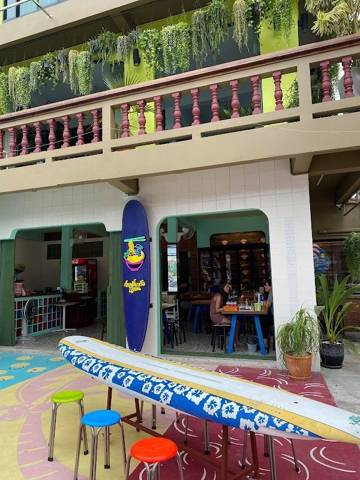
Лапша Neon Boat Noodles (гид Michelin)
лапшичная · 🚗 ≈ 25 мин · ⭐ 4,6 Google · 100–200 ฿ · отлично с Ниной
Небольшая лапшичная в Южной Паттайе с классической «лодочной» лапшой (куай тиу руа) — насыщенный бульон и разные добавки. Есть в гиде Michelin.
Лапша Neon Boat Noodles (гид Michelin)
Лапша Neon Boat Noodles (гид Michelin)
лапшичная · 🚗 ≈ 25 мин · ⭐ 4,6 Google · 100–200 ฿ · отлично с Ниной
Небольшая лапшичная в Южной Паттайе с классической «лодочной» лапшой (куай тиу руа) — насыщенный бульон и разные добавки. Есть в гиде Michelin.
💡 Фишки
Michelin советует лодочную лапшу и острую варёную свинину. Заказ через QR-код. Десерты можно заказать из кондитерской через дорогу — их принесут к столу. Любители острого хвалят «заап хэнг» (сухую острую лапшу).
С Ниной
Для Нины по просьбе делают неострую лапшу и рис — это отмечают родители малышей. Есть зал с кондиционером.
Часы
ежедневно 10:00–22:00
Цены
≈ 100–200 бат на человека; порции небольшие, берут по 2 миски
Оценка
отлично — быстрый дешёвый обед или ужин в центре
Нюансы
в обед людно; с парковкой сложно, есть место напротив; бульон по умолчанию острый — говорить «май пхет»
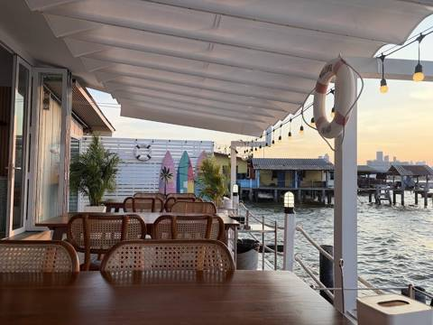
So Tai Seafood (ร้านซ้อต่าย, Наклуа)
семейный рыбный ресторан · 🚗 ≈ 40–45 мин · ⭐ 4,6 Google · 400–600 ฿ · можно с Ниной
Семейная рыбная кухня в конце сой Наклуа 6, недалеко от рынка Лан Пхо. Днём около шести столов, вечером добавляют столы. Тайцы стоят в очередь ради свежих морепродуктов по умеренным ценам.
So Tai Seafood (ร้านซ้อต่าย, Наклуа)
So Tai Seafood (ร้านซ้อต่าย, Наклуа)
семейный рыбный ресторан · 🚗 ≈ 40–45 мин · ⭐ 4,6 Google · 400–600 ฿ · можно с Ниной
Семейная рыбная кухня в конце сой Наклуа 6, недалеко от рынка Лан Пхо. Днём около шести столов, вечером добавляют столы. Тайцы стоят в очередь ради свежих морепродуктов по умеренным ценам.
💡 Фишки
Брать гребешки, запечённые с сыром (их любят дети), кальмара или осьминога в чернилах, гребешки с базиликом, рыбные котлетки, жареный рис с морепродуктами и яйцо на пару с морепродуктами. После 17:00 ставят дополнительные столы в проходе за рестораном.
С Ниной
Нине — яйцо на пару, жареный рис, гребешки с сыром. Места мало, коляску поставить сложно.
Часы
ежедневно 11:30–21:00
Цены
≈ 400–600 бат на человека
Оценка
можно — лучший «местный» рыбный обед в Наклуа, но тесно
Нюансы
приходить к открытию (11:30), иначе очередь; сидят на улице — жарко; рядом небольшая парковка; удобно совместить с рынком Лан Пхо
🍤 Буфеты
Отельные и местные буфеты с хорошими отзывами. Буфет в нашем отеле (суббота, Fisherman's BBQ) — выше, в «Рядом с отелем». Цены меняются — перед поездкой проверить и забронировать.
🏨 В отелях
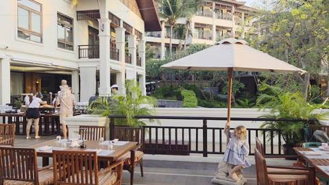
Elements — InterContinental Pattaya
буфет в отеле · 🚗 ≈ 20 мин · ⭐ 4,3 · ≈ 1290 ฿ · только сб
Субботний ужин-буфет «Symphony of Elements» в отеле InterContinental: морепродукты, гриль, десерты. Только по субботам, 18:00–22:00.
Elements — InterContinental Pattaya
Elements — InterContinental Pattaya
буфет в отеле · 🚗 ≈ 20 мин · ⭐ 4,3 · ≈ 1290 ฿ · только сб
Субботний ужин-буфет «Symphony of Elements» в отеле InterContinental: морепродукты, гриль, десерты. Только по субботам, 18:00–22:00.
Где
Пратамнак, ≈ 20 мин на машине
Что заказать
Устрицы и морепродукты на льду, суши и сашими, жаркое из говядины, рёбрышки ягнёнка на гриле, паста, блинчики сюзетт, французские пирожные
С Ниной
До 6 лет бесплатно, 7–12 лет — полцены
Цены
Взрослый 1290 бат, ребёнок 7–12 лет 645 бат (итоговая цена, без напитков; сайт отеля, гид от авг. 2026)
Нюансы
Бронировать заранее: +66 38 259 888, LINE @interconpattaya. Совпадает с субботним буфетом в нашем отеле. В одной старой брошюре другая цена (1450–1599), так что при брони уточнить
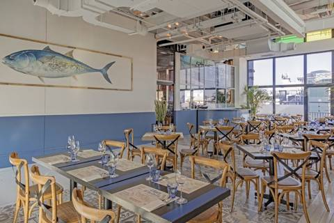
Big Fish Seafood Buffet (Siam@Siam)
буфет в отеле · 🚗 ≈ 30 мин · ⭐ 4,7 · от 849 ฿ · ср–вс
Буфет морепродуктов на 6-м этаже отеля Siam@Siam: 4 часа без спешки. Со среды по воскресенье, 17:30–21:30.
Big Fish Seafood Buffet (Siam@Siam)
Big Fish Seafood Buffet (Siam@Siam)
буфет в отеле · 🚗 ≈ 30 мин · ⭐ 4,7 · от 849 ฿ · ср–вс
Буфет на 14-м этаже отеля Hilton с видом на залив. Ужин каждый день с 18:00, в пятницу — морепродукты, в субботу — гриль; в воскресенье — бранч.
Где
Центр Паттайи (ТЦ Central Festival), ≈ 25–30 мин на машине
Что заказать
Тигровые креветки и креветки-богомолы на гриле, крабы, устрицы, тайская еда (сом там), стейки, много десертов. Суши — слабее
С Ниной
Детской цены в свежих источниках нет — уточнить; есть детское меню и детские стулья
Цены
Морской ужин ≈ 1300 бат, бранч ≈ 1400–1500 бат на взрослого (данные 2024–2025 — проверить цену; напитки и сервисный сбор могут быть сверху)
Нюансы
Дресс-код: без пляжной одежды и шлёпанцев, мужчинам — брюки и закрытая обувь. Столик у окна на закат просить при брони: +66 38 253 000. Члены Hilton Honors — скидка
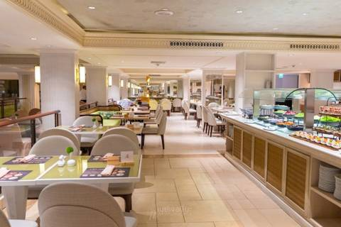
Cascade — Dusit Thani Pattaya
буфет в отеле · 🚗 ≈ 30 мин · ⭐ 4,3 · 1400 ฿ · пт–сб
«Seafood & Carvery Night» в отеле Dusit Thani: морепродукты и мясо, которое режут при вас. Пятница и суббота, вечером.
Cascade — Dusit Thani Pattaya
Cascade — Dusit Thani Pattaya
буфет в отеле · 🚗 ≈ 30 мин · ⭐ 4,3 · 1400 ฿ · пт–сб
«Seafood & Carvery Night» в отеле Dusit Thani: морепродукты и мясо, которое режут при вас. Пятница и суббота, вечером.
Где
Северная Паттайя (Пляжная улица), ≈ 30 мин на машине
Что заказать
Тигровые и речные креветки, голубой и снежный краб, лосось, сашими, морское ушко, запечённая говядина
С Ниной
Детская цена на сайте не указана — уточнить при брони
Цены
1400 бат на взрослого, итоговая, вода включена (сайт отеля, октябрь 2026)
Нюансы
Подходит на пт 23.10 или 30.10, чтобы не пересекаться с субботой в нашем отеле. Бронь: +66 38 425 611. Воскресный бранч в The Bay на октябрь уже распродан
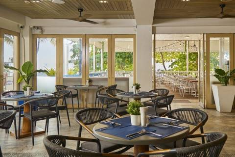
The Beach Club — Pullman Pattaya
буфет в отеле · 🚗 ≈ 35 мин · ⭐ 4,7 · 1199 ฿ + 17 % · только сб
Буфет морепродуктов с грилем на берегу моря в отеле Pullman. Только по субботам, 18:00–21:00.
The Beach Club — Pullman Pattaya
The Beach Club — Pullman Pattaya
буфет в отеле · 🚗 ≈ 35 мин · ⭐ 4,7 · 1199 ฿ + 17 % · только сб
Буфет морепродуктов-гриль: сами берёте живых крабов, креветок, ракушки и жарите на углях за столом + горячее, холодные закуски, десерты. Ежедневно, будни 15:30–22:00, выходные с 15:00. Без лимита времени.
Буфет морепродуктов-гриль: сами берёте живых крабов, креветок, ракушки и жарите на углях за столом + горячее, холодные закуски, десерты. Ежедневно, будни 15:30–22:00, выходные с 15:00. Без лимита времени.
Где
≈6 км, 10–12 мин на машине (ул. Чайяпрук)
Что заказать
Живые креветки и крабы, ракушки на гриле, кальмары, манго с клейким рисом, мороженое. Напитки (соки, газировка) включены.
С Ниной
Дети до 110 см — бесплатно, 110–120 см — ≈199, 120–140 см — ≈215 бат. Есть детские стульчики. С Ниной нормально, но угли на столе горячие — сажать ребёнка подальше от гриля.
Цены
Взрослый ≈429 бат (нетто, с напитками); ребёнок 2 лет — бесплатно (Buzzin Pattaya, окт. 2025; Wongnai)
Нюансы
Залог 100–200 бат за посуду/остатки (возвращают). В пик (выходные, 18–19 ч) очередь ≈30 мин — лучше приехать к открытию. Есть парковка. Дымно от углей. На старой вывеске — 399 бат, сейчас ≈429.
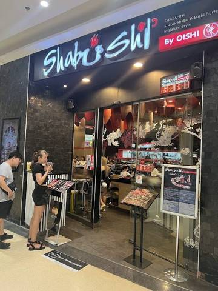
Shabushi by Oishi (Central Pattaya)
шабу-буфет · 🚗 25–30 мин · ⭐ 3,8 · ≈ 399–599 ฿ · лимит 75 мин
Шабу-буфет на конвейере: у каждого свой котелок с бульоном, тарелочки едут по ленте. ТЦ, ≈10:30/11:00–22:00, лимит ≈75 мин.
Shabushi by Oishi (Central Pattaya)
Shabushi by Oishi (Central Pattaya)
шабу-буфет · 🚗 25–30 мин · ⭐ 3,8 · ≈ 399–599 ฿ · лимит 75 мин
Шабу-буфет на конвейере: у каждого свой котелок с бульоном, тарелочки едут по ленте. ТЦ, ≈10:30/11:00–22:00, лимит ≈75 мин.
Где
≈13 км, 25–30 мин (ТЦ Central Pattaya, 6 этаж)
Что заказать
Свинина, курица, морепродукты, овощи в бульоне; суши, жареное, десерты и мороженое с ленты.
С Ниной
Лучший вариант для 2-летки: кондиционер, без дыма, индукция вместо углей, есть детские стулья; малышам обычно бесплатно (рост уточнить). Ребёнку весело смотреть на конвейер.
Цены
Взрослый ≈399–599 бат в зависимости от уровня (Wongnai, 2023). Проверить цену.
Нюансы
Лимит 75 мин. В выходные вечером очередь. Можно совместить с прогулкой по ТЦ.
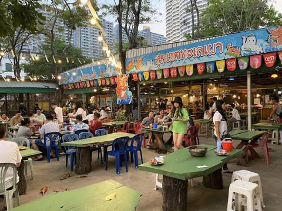
Sudkhet Thalaypao BBQ Buffet
гриль-буфет · 🚗 ≈ 10 мин · ⭐ 4,1 · ≈ 399 ฿
Буфет морепродуктов-гриль прямо у моря, столики на открытом воздухе. Есть суши и муката. Примерно 15:30–21:30, без лимита времени.
2 этаж (зона прилёта): McDonald's до 24:00, Gourmet Noodle House и Starbucks — круглосуточно. 5 этаж (публичная зона): Majia Shumai, KungFu (真功夫), ThaiExpress — круглосуточно
С Ниной
McDonald's — самый простой вариант для Нины
Нюансы
часы по справочнику без даты — проверить на месте; платить наличными юанями
Сводка по отзывам Google, Tripadvisor, Trip.com, Wongnai и гидов. Часы и цены могли измениться — сверяйте в Google Maps. Rimpa Lapin и Mimosa убраны: по свежим отзывам они закрыты.
😋 Что попробовать
Главные блюда, которые стоит попробовать взрослым. Острота: 🌶 — чуть, 🌶🌶🌶 — очень. Нажмите на фото, чтобы увеличить.
⭐ Если попробовать только пять: пад тай, том ям кунг, као ман гай, пу пад понг карри (краб в карри) и манго с клейким рисом.
🍜 Лапша и рис
Пад тай ผัดไทย
Жареная рисовая лапша с креветками, яйцом, ростками. Перец и сахар добавляете сами. Нине — с курицей вместо креветок.
🌶 · 👶 Нине — осторожно
📍 везде
Пад си ю ผัดซีอิ๊ว
Широкая рисовая лапша, обжаренная с соевым соусом, яйцом и китайской капустой. Сладковатая, совсем не острая.
не остро · 👶 Нине можно
📍 уличные лавки, фуд-корты
Рад на ราดหน้า
Широкая лапша под густым соусом с мясом и зеленью — тайская «лапша в подливке».
не остро · 👶 Нине можно
📍 уличные лавки
Кхао сой ข้าวซอย
Северный суп-карри на кокосовом молоке с мягкой и хрустящей лапшой и курицей. Многие считают лучшим блюдом Таиланда.
🌶 · 👶 Нине — осторожно
📍 плавучий рынок, фуд-корты
Куай тиео (лапша-суп) ก๋วยเตี๋ยว
Суп с рисовой лапшой. «Лодочная» лапша (руа) — тёмная и пряная; ребёнку просите прозрачный бульон «нам сай».
🌶 · 👶 Нине — осторожно
📍 плавучий рынок, уличные лавки
Пад кра пао ผัดกะเพรา
Фарш, обжаренный с тайским базиликом и чили, на рисе с жареным яйцом. Любимая еда самих тайцев.
🌶🌶🌶 · 🚫 Нине нет
📍 любое кафе
Као му данг / му кроб ข้าวหมูแดง
Рис с красной свининой барбекю и хрустящей свиной грудинкой, сладкий соус. Отличный быстрый обед.
не остро · 👶 Нине можно
📍 уличные лавки, Pier 21
Као мок гай ข้าวมกไก่
Тайский бирьяни: жёлтый рис с курицей, к нему кисло-сладкий соус. Не острое.
не остро · 👶 Нине можно
📍 халяльные лавки, Pier 21
🍲 Супы и карри
Том ям кунг ต้มยำกุ้ง
Знаменитый кисло-острый суп с креветками. Бывает прозрачный (нам сай) и сливочный (нам кхон).
🌶🌶🌶 · 🚫 Нине нет
📍 рыбные рестораны
Том кха кай ต้มข่าไก่
Суп на кокосовом молоке с курицей и галангалом — мягче и сливочнее том яма.
🌶🌶 · 🚫 Нине нет
📍 почти любой ресторан
Кэнг сом แกงส้ม
Кисло-острый оранжевый суп-карри с рыбой или креветками и овощами, без кокосового молока.
🌶🌶🌶 · 🚫 Нине нет
📍 рыбные рестораны
Массаман แกงมัสมั่น
Мягкое сладковатое карри с курицей/говядиной и картофелем. Самое неострое из карри.
🌶 · 👶 Нине — осторожно
📍 почти любой ресторан
Пананг แกงพะแนง
Густое сладковатое карри с говядиной или свининой и листьями лайма — мягче красного.
🌶🌶 · 🚫 Нине нет
📍 почти любой ресторан
Красное карри แกงเผ็ด
Карри на кокосовом молоке с утиной грудкой или курицей, бамбуком и базиликом.
🌶🌶 · 🚫 Нине нет
📍 почти любой ресторан
Зелёное карри แกงเขียวหวาน
Карри на кокосовом молоке с курицей и баклажанами. Ароматное и довольно острое.
🌶🌶 · 🚫 Нине нет
📍 почти любой ресторан
🦐 Рыба, морепродукты, мясо
Пу пад понг карри ปูผัดผงกะหรี่
Краб в мягком яично-карри соусе. Одно из лучших морских блюд, почти не острое. Нине — нет: краб частый аллерген, впервые в поездке не пробовать.
🌶 · 🚫 Нине нет
📍 Pupen, Moom Aroi, Praneat
Пла нынг манао ปลานึ่งมะนาว
Целая рыба (обычно сибас) на пару в лимонно-чесночном бульоне с чили. Свежо и ярко.
🌶🌶 · 👶 Нине — осторожно
📍 рыбные рестораны, рынок Лан Пхо
Му кроб หมูกรอบ
Хрустящая жареная свиная грудинка — заказывают с рисом или жаренной с базиликом.
не остро · 👶 Нине можно
📍 лавки, рестораны
🥗 Салаты, закуски, овощи
Сом там ส้มตำ
Салат из зелёной папайи. По умолчанию ОЧЕНЬ острый — просите «пхет нит ной».
🌶🌶🌶 · 🚫 Нине нет
📍 Тепразит, исанские лотки
Ларб ลาบ
Тёплый салат из фарша с мятой, лаймом и молотым жареным рисом. Острый.
🌶🌶🌶 · 🚫 Нине нет
📍 исанские кафе
Ям вун сен ยำวุ้นเส้น
Салат из стеклянной лапши с креветками и фаршем, заправка из лайма и чили.
🌶🌶🌶 · 🚫 Нине нет
📍 рестораны, лавки
Тод ман пла ทอดมันปลา
Рыбные котлетки с красной пастой карри и фасолью, к ним сладкий соус с огурцом.
🌶 · 👶 Нине — осторожно
📍 рынки, рестораны
По пиа тод ปอเปี๊ยะทอด
Хрустящие жареные спринг-роллы с овощами и стеклянной лапшой, сладкий соус.
не остро · 👶 Нине можно
📍 рынки, Тепразит
Пад пак бунг ผัดผักบุ้ง
Обжаренный водяной шпинат с чесноком и соевым соусом — самый популярный овощной гарнир.
🌶 · 👶 Нине — осторожно
📍 почти любой ресторан
🍮 Десерты
Буа лой บัวลอย
Шарики из рисовой муки в тёплом кокосовом молоке — нежный десерт.
не остро · 👶 Нине можно
📍 рынки, десертные лавки
Сладости для Нины — роти, кокосовое мороженое, кханом кхрок — в разделе «Нине».
Напитки и фрукты
Тайский чай «ча йен» ชาเย็น
Оранжевый сладкий чай со сгущёнкой и льдом. Очень сладкий — ребёнку не нужно.
Фруктовые шейки น้ำปั่น
Манго, арбуз, маракуйя со льдом. Для Нины просите «май сай нам таан» — без сахара.
Тропические фрукты ผลไม้
Сейчас есть помело, папайя, кокосы, мини-бананы; манго в конце октября не в пике сезона, но продаётся везде — см. вкладку «Сезон». Продают уже очищенными в пакетиках.
🛺 Топ уличной еды
Уличная еда в Таиланде — это нормально и вкусно: тайцы сами так едят каждый день. Цены — примерные за 2025–2026 годы, на туристических рынках на 10–30 % дороже. Порядок — от самого «обязательного».
1
Му пинг с клейким рисом หมูปิ้ง
Свинина на шпажке в сладком маринаде, жарится на углях. К ней кулёчек клейкого риса — классический тайский завтрак.
💰 10–15 за шпажку, рис 10 бат
📍 утром у 7-Eleven на Сукхумвит рядом с отелем, все рынки
👶 Нине можно: не остро; порезать мелко, жир срезать
2
Кай янг — курица-гриль ไก่ย่าง
Курица по-исански на углях.
💰 40–100 (ножка / полкурицы) бат
📍 Джомтьенский ночной рынок, Тепразит
👶 Нине можно: острый соус-дип — отдельно, Нине без него
3
Кай тод — жареная курица ไก่ทอด
Хрустящая курица во фритюре, часто с жареным лемонграссом или луком.
💰 20–40 за кусок бат
📍 Тепразит, Beach Road, лотки у 7-Eleven
👶 Нине можно: брать только что из масла
4
Лук чин — шарики на палочке ลูกชิ้น
Мясные или рыбные шарики, их жарят или варят при вас.
скорее аттракцион; кханом кхрок, мороженое, пад тай с лодок — дороже, чем на улице
Лотки рядом с отелем Сукхумвит, у 7-Eleven
утром и вечером
му пинг, кханом кхрок; точное расписание — спросить на ресепшене
Вегетарианский фестиваль (жёлтые флажки «เจ» на лотках) в 2026 году идёт 10–18 октября и к нашему приезду закончится.
👶 Нине
Правило: Нине безопаснее всего блюда, где соус подают отдельно, и всё, что жарится при вас. Просите «май пхет» (не остро), пробуйте сами первым. Стульчики есть в торговых центрах и отельных ресторанах, на улице — почти никогда. Ужинать удобно в 18:00–19:30.
Као ман гай ข้าวมันไก่
Отварная курица на рисе, сваренном в курином бульоне. Соус подают отдельно — его можно не давать. Самое «безопасное» блюдо Таиланда.
не остро · 👶 Нине можно
📍 уличные лавки, фуд-корт Pier 21 (Terminal 21)
Кай чжеу ไข่เจียว
Тайский пышный омлет, обычно с рисом. Есть почти везде, даже если в меню нет — просто попросите.
не остро · 👶 Нине можно
📍 любое кафе
Као пад ข้าวผัด
Жареный рис с курицей (гай) или свининой (му) — Нине лучше так; с креветками (кунг) — только если уже пробовала их дома. Острый соус ставят отдельно.
не остро · 👶 Нине можно
📍 любое кафе, Pier 21
Му пинг หมูปิ้ง
Свиные шашлычки в сладковатом маринаде, к ним клейкий рис. Дети обычно в восторге.
не остро · 👶 Нине можно
📍 Тепразит, уличные лотки утром
Кай янг ไก่ย่าง
Курица на гриле. Острый соус «джео» отдельно — для взрослых.
не остро · 👶 Нине можно
📍 рынки, Тепразит
Кай тод ไก่ทอด
Жареная курица, часто с хрустящим лемонграссом. Без соуса — не остро.
не остро · 👶 Нине можно
📍 рынки, фуд-корты
Джок โจ๊ก
Рисовая каша на бульоне с фрикадельками и яйцом — классический тайский завтрак, мягкая и тёплая.
не остро · 👶 Нине можно
📍 утренние лотки, завтрак в отеле
Роти โรตี
Тонкий жареный блин с бананом, яйцом и сгущёнкой. Десерт с уличной тележки.
не остро · 👶 Нине можно
📍 Тепразит, тележки на набережной
Кханом кхрок ขนมครก
Маленькие кокосовые оладушки — сладкие, нежные.
не остро · 👶 Нине можно
📍 плавучий рынок, рынки
Кокосовое мороженое ไอติมกะทิ
Мороженое на кокосовом молоке, часто прямо в половинке кокоса.
не остро · 👶 Нине можно
📍 плавучий рынок, Тепразит
🍍 Сезон: фрукты и морепродукты
Фрукты в конце октября
Конец октября — межсезонье. Не сезон: личи, рамбутан, мангостин (если и попадётся — поздний и дорогой, домой на него не рассчитывать), дуриан (мало и дорого, в отель нельзя), салак.
Мангостин, рамбутан, манго, лонган — первые два сейчас редкостьЛотки с фруктовыми шейками — просите без сахараМанго с клейким рисом — есть круглый год
Мангома-муанг
сладкое, медовое; в конце октября не пик сезона, но продают везде
💰 80–150 бат/кг · 👶 да — один из лучших вариантов, без кожуры
Помелосом-о
как грейпфрут без горечи
💰 60–120 бат/кг · 👶 да, дольки без плёнок
Папайямалакор
мягкая, сладкая
💰 25–50 бат/кг · 👶 да (слегка слабит)
Ананассаппарот
сладко-кислый, сорт пхулэ — самый сладкий
💰 30–60 за шт. · 👶 понемногу — кислый
Питайягэу мангкон
нейтрально-сладкая
💰 40–80 бат/кг · 👶 да (красная окрашивает стул — это нормально)
Кокосмапхрао он
сладкая вода, мягкая мякоть
💰 30–60 за шт. · 👶 да
Мини-бананыклуэй кай
очень сладкие
💰 20–60 за гроздь · 👶 да — идеально
Саподиллаламут
карамель с грушей
💰 40–80 бат/кг · 👶 да, без чёрных косточек
Розовое яблокочомпу
хрустящее, водянистое
💰 60–100 бат/кг · 👶 тонкими ломтиками
Гуавафаранг
хрустящая, как незрелая груша
💰 30–60 бат/кг · 👶 только мягкую, крепит
Лонган / лонконглам-яй / лонконг
очень сладкий / кисло-сладкий
💰 40–100 бат/кг · 👶 только очищенный, без косточки, разрезанный
Джекфруткханун
сладкий, «жвачный»
💰 60–100 бат/кг · 👶 небольшими кусочками
Нине: всё круглое и скользкое (лонган, виноград) — резать и вынимать косточки. Новые фрукты — по одному. Резаные фрукты со льдом с лотков лучше заменить целыми.
🦀 Морепродукты
Местное и свежее: сибас (пла капхонг), групер (пла гао), красный люциан, скумбрия (пла ту); голубой краб (пу ма) из Самэсана и мангровый краб (пу дам); тигровые и гигантские речные креветки (кунг мэнам), кальмары, мидии.
Цены в ресторане за кг: креветки 350–600 (крупные до 800), сибас 200–350, мангровый краб 400–700, голубой краб 600–900, кальмар 180–280, лобстер 900–1800. На рынке Наклуа на 30–50% дешевле, а приготовить там же стоит 30–80 бат за блюдо.
Как не переплатить: уточните, цена за кг или за 100 г; стойте у весов и сфотографируйте табло; следите, чтобы не взвешивали с водой и верёвками; запомните своего краба. «Market price» без цифры — не берите. Спор о счёте — туристическая полиция 1155.
⚠ Мечехвост (мэнг да, แมงดาทะเล) не есть никогда — особенно салат из его икры. Он бывает ядовит, в Чонбури были смертельные отравления.
Нине — только хорошо приготовленную рыбу, без сырого и без моллюсков. Креветки и крабы — частый аллерген: впервые в поездке не пробовать (можно, только если уже ела их дома). Икряных самок крабов в октябре–декабре ловить запрещено — они редкие и дорогие.
Медузы: с августа по октябрь их заносит в бухту Джомтьен (в основном ушастые — жгутся, но не опасны для жизни). При ожоге промыть уксусом, не пресной водой. Мёртвые медузы на песке тоже жгутся.
🗣 Как заказывать
Фразы — покажите официанту
Нажмите на тайскую надпись — она откроется крупно. Остальные темы (такси, магазин, аптека) — в разговорнике.
Не остро — с нами ребёнок 2 лет
🇬🇧 Not spicy, please — we have a 2-year-old [нот спАйси, плиз — уи хэв э тУ-йир-Оулд]
🇹🇭 май пхет, ми дек сонг кхуап кха
Меню, пожалуйста
🇬🇧 Menu, please [мЭнью, плиз]
🇹🇭 кхо меню ной
Вот это (показать)
🇬🇧 This one [зис уАн]
🇹🇭 ан ни
Не остро
🇬🇧 Not spicy [нот спАйси]
🇹🇭 май пхет
Чуть-чуть остро
🇬🇧 A little spicy [э литл спАйси]
🇹🇭 пхет нит ной
Без сахара
🇬🇧 No sugar [нОу шУгэр]
🇹🇭 май сай нам таан
Без льда
🇬🇧 No ice [нОу Айс]
🇹🇭 май сай нам кхэнг
Без глутамата
🇬🇧 No MSG [нОу эм-эс-джИ]
🇹🇭 май сай пхонг чу рот
Вода без газа
🇬🇧 Water [уОтэр]
🇹🇭 нам плао
Ещё одну
🇬🇧 One more [уАн мор]
🇹🇭 ик нынг
С собой
🇬🇧 To take away [ту тэйк эуЭй]
🇹🇭 клап бан
Сколько за килограмм?
🇬🇧 How much per kilo? [хАу мач пёр кИлоу?]
🇹🇭 кило ла тхао рай?
Очень вкусно!
🇬🇧 Delicious! [дилИшэс!]
🇹🇭 арой маак!
Счёт, пожалуйста
🇬🇧 Check, please [чек, плиз]
🇹🇭 чек бин дуай кха / кхрап
Детский стульчик
🇬🇧 High chair [хай чЭар]
🇹🇭 кау-ии дек
Для ребёнка, не остро
🇬🇧 For a child, not spicy [фор э чайлд, нот спАйси]
🇹🇭 сам рап дек, май пхет
Ребёнку 2 года
🇬🇧 My child is 2 years old [май чайлд из ту йирз Оулд]
🇹🇭 лук сонг кхуап
Горячая вода
🇬🇧 Hot water [хот уОтэр]
🇹🇭 нам рон
📋 Как это работает
Острота по умолчанию — тайская. Даже «не остро» бывает остро для ребёнка: пробуйте сами первым. Для Нины безопаснее блюда, где соус подают отдельно (као ман гай, као пад, шашлычки, курица).
Едят ложкой и вилкой: вилкой подгребают на ложку, ножей обычно нет. Палочки — только к лапше.
Блюда общие: заказывают несколько на стол и рис отдельно (као суай — белый, као ниау — клейкий).
На столе приправы: рыбный соус с чили, сахар, уксус с перцем, сушёный чили. Добавляйте по вкусу, ребёнку — ничего.
Цены «++» в меню отелей и ресторанов значат +10% сервисный сбор и +7% НДС. Чаевые не обязательны: в кафе оставляют 20–50 бат или сдачу, если сервис хороший.
Морепродукты на вес: перед готовкой уточните цену за кг и сам вес, сфотографируйте весы. Договоритесь, как готовить (на гриле, на пару, в карри).
Улица и рынки — мелкими купюрами. Выбирайте лотки, где много местных и всё жарится при вас.
Вода — только бутилированная, лёд в кафе заводской (с дыркой посередине) — его можно. Зубы ребёнку лучше чистить бутилированной.
Детские стульчики есть в торговых центрах, сетевых и отельных ресторанах; в уличных кафе — почти никогда. С Ниной удобно ужинать в 18:00–19:30: многие местные кафе закрываются в 20–22.